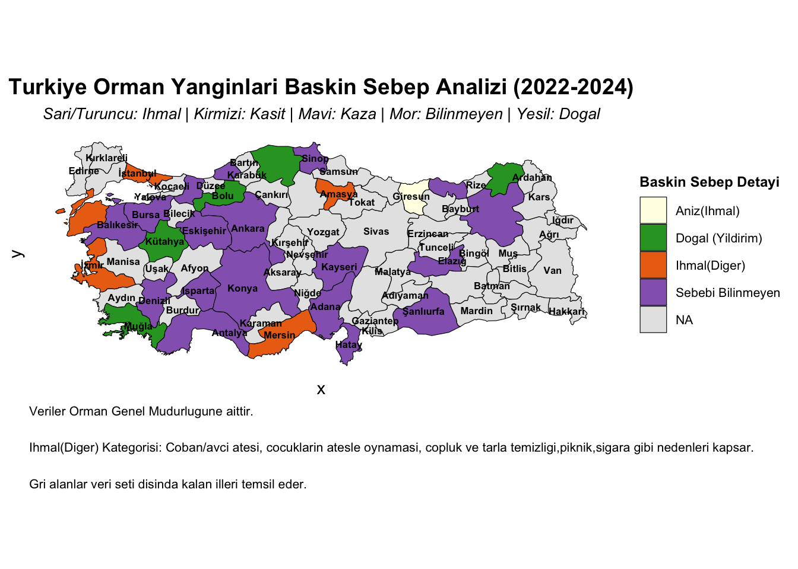

#About this site This section presents a comprehensive Exploratory Data Analysis (EDA) of Türkiye’s forest dynamics and wildfire patterns over the last two decades. The primary objective of this site is to transform raw environmental data into actionable insights by examining the correlation between forest density, regional climate risks, and human-induced fire triggers.
The data utilized in this study is sourced from the official records of the General Directorate of Forestry (OGM), covering a detailed timeline from 2004 to 2024. Throughout this page, we employ advanced data wrangling techniques and spatial visualizations to uncover historical trends, identify high-risk “hotspots” in the Mediterranean and Aegean belts, and analyze the socio-economic causes behind these ecological disturbances. By bridging the gap between statistical data and environmental narrative, we aim to provide a clear roadmap for future conservation and prevention strategies.
city name matching, left side: names in the package, right side: names in the excel, this part was so hard to do because ai wasn’t helpful and i had to do it manually
turkiye_map <- turkiye_map %>%mutate(name_fixed =case_when( name =="Zinguldak"~"Zonguldak", name =="Kinkkale"~"Kırıkkale", name =="K. Maras"~"Kahramanmaraş", name =="Adayaman"~"Adıyaman", name =="Afyonkarahisar"~"Afyonkarahisar", name =="Diyarbakir"~"Diyarbakır", name =="Nigde"~"Niğde", name =="Elazig"~"Elazığ", name =="Gumushane"~"Gümüşhane", name =="Sanliurfa"~"Şanlıurfa", name =="Sirnak"~"Şırnak", name =="Cankiri"~"Çankırı", name =="Tekirdag"~"Tekirdağ", name =="Aydin"~"Aydın", name =="Izmir"~"İzmir", name =="Istanbul"~"İstanbul", name =="Usak"~"Uşak", name =="Iğdir"~"Iğdır", name =="Adiyaman"~"Adıyaman", name =="Gümüshane"~"Gümüşhane", name =="Çankiri"~"Çankırı", name =="Mugla"~"Muğla", name =="Agri"~"Ağrı", name =="Mus"~"Muş", name =="Nevsehir"~"Nevşehir", name =="Eskisehir"~"Eskişehir", name =="Balikesir"~"Balıkesir", name =="Kirklareli"~"Kırklareli", name =="Kütahya"~"Kütahya", name =="Kirsehir"~"Kırşehir", name =="Karabük"~"Karabük", name =="Bartın"~"Bartın", name =="Çanakkale"~"Çanakkale",TRUE~ name # Diğerlerini olduğu gibi bırak ))
renk_paleti <-c(# D0HMAL - Sadece SarD1 ve AC'D1k Turuncu (KD1rmD1zD1dan tamamen baD D1msD1z)"Aniz"="#FFFFE5", "Coplu"="#FFF7BC", "Avcilik"="#FEE391", "Coban Atesi"="#FEC44F", "Sigara"="#FE9929", "Piknik"="#EC7014", "Diger (Ihmal)"="#CC4C02",# KASIT - Koyu KD1rmD1zD1 ve Bordo TonlarD1"Teror"="#FCBBA1", "Kundaklama"="#FB6A4A", "Acma"="#CB181D", "Diger (Kasit)"="#67000D",# KAZA - Saf Mavi TonlarD1"Enerji"="#DEEBF7", "Trafik"="#6BAED6", "Diger (Kaza)"="#08306B",# SEBEBD0 BD0LD0NMEYEN - Mor"Sebebi Bilinmeyen"="#9467BD",# DOD AL - YeE il"Dogal (Yildirim)"="#2CA02C")
3. drawing the final map of the causes
harita_final <- tr_map %>%left_join(baskin_analiz, by =c("name"="Bolge"))ggplot(data = harita_final) +geom_sf(aes(fill = Alt_Sebep), color ="black", size =0.2) +# Il isimleristat_sf_coordinates(aes(label = name), geom ="text", size =2.2, color ="black", fontface ="bold", check_overlap =TRUE) +scale_fill_manual(values =c(# IHMAL GRUBU (Sari/Turuncu)"Aniz(Ihmal)"="#FFFFE5", "Coplu"="#FFF7BC", "Avcilik"="#FEE391", "Coban Atesi"="#FEC44F", "Sigara"="#FE9929", "Piknik"="#FB9A29", "Ihmal(Diger)"="#EC7014", # KASIT GRUBU (Kirmizi)"Teror"="#FEE5D9", "Kundaklama"="#FCAE91", "Acma"="#FB6A4A", "Diger (Kasit)"="#CB181D",# KAZA GRUBU (Mavi)"Enerji"="#DEEBF7", "Trafik"="#6BAED6", "Diger (Kaza)"="#08306B",# DIGERLERI"Sebebi Bilinmeyen"="#9467BD","Dogal (Yildirim)"="#2CA02C" ), na.value ="gray90", name ="Baskin Sebep Detayi" ) +theme_minimal() +theme(axis.text =element_blank(),axis.ticks =element_blank(),panel.grid =element_blank(),legend.position ="right",legend.title =element_text(face ="bold", size =9),legend.text =element_text(size =8),plot.title =element_text(hjust =0.5, face ="bold", size =14),plot.subtitle =element_text(hjust =0.5, size =10, face ="italic"),plot.caption =element_text(hjust =0, size =8, lineheight =1.2) ) +labs(title ="Turkiye Orman Yanginlari Baskin Sebep Analizi (2022-2024)",subtitle ="Sari/Turuncu: Ihmal | Kirmizi: Kasit | Mavi: Kaza | Mor: Bilinmeyen | Yesil: Dogal",caption =paste0("Veriler Orman Genel Mudurlugune aittir.\n\n","Ihmal(Diger) Kategorisi: Coban/avci atesi, cocuklarin atesle oynamasi, copluk ve tarla temizligi,piknik,sigara gibi nedenleri kapsar.\n\n","Gri alanlar veri seti disinda kalan illeri temsil eder." ) )
Warning in st_point_on_surface.sfc(sf::st_zm(x)): st_point_on_surface may not
give correct results for longitude/latitude data

#Key Takeaways Data Foundation: In this study, we analyzed the 2004–2024 datasets from the General Directorate of Forestry (OGM) to examine forest density, fire frequency, burned areas, and the underlying causes of forest fires across Türkiye.
Fire Trends: Our time-series analysis reveals a steady upward trend in the number of fire incidents. However, the most significant finding is the catastrophic spike in 2021, where the burned area reached approximately 139,503 hectares—a historic outlier.
Regional Risk Profiles: We identified the Aegean and Mediterranean regions as high-risk zones for both fire frequency and severity. In contrast, Central Anatolia and the Black Sea regions are primarily characterized by smaller-scale fires often linked to negligence.
Dominant Causes: A striking portion of fires remains categorized as “Unknown.” Among identified causes, “Negligence”—including stubble burning, picnics, and discarded cigarettes—emerges as the primary driver of forest loss.
#1. Forest Distribution and Spatial Density We initiated our analysis by mapping the current state of forest cover across Türkiye. By calculating the ratio of forest area to the total land area for each province, we created a “Forest Density Map.” Our visualization utilizes a red-to-green gradient to highlight the stark contrast between the forest-rich regions of the Black Sea and Western Mediterranean and the arid landscapes of Central and Southeastern Anatolia. This spatial understanding is crucial as it defines the “fuel load” available for potential fire incidents.
#2. Temporal Evolution of Forest Fires (2004–2024) Over the last two decades, forest fires have evolved from seasonal environmental concerns into a persistent crisis fueled by climate change and human activity. Our time-series analysis shows that while the annual number of fires fluctuates, the general trend is rising. The year 2021 stands out as a devastating “tipping point.” During this period, the total burned area skyrocketed, exceeding the combined totals of several previous years. This suggests that while we are facing more fires, the fires themselves are becoming harder to contain and more destructive.
#3. Regional Risk and Impact Assessment To better understand the geography of these disasters, we mapped both fire frequency and total burned area. Our findings indicate that provinces like Antalya, Muğla, and İzmir are “hotspots” where fires occur most frequently. However, the impact is not uniform. By using a logarithmic scale for the burned area map, we were able to visualize that a single fire in the Southern coastal belt often results in far greater ecological damage than multiple fires in the North. This is largely due to the flammable nature of Mediterranean vegetation (maquis and pine) and the prevailing wind conditions.
#4. Root Cause Analysis: The Human Element One of the most critical aspects of our report is the analysis of fire triggers, categorized into Negligence, Intentional, Accident, Natural, and Unknown. We found that “Negligence”—specifically stubble burning (anız) and picnic-related activities—is a dominant force in many provinces. Perhaps more concerning is the high frequency of “Unknown” causes. This lack of data suggests a need for more sophisticated post-fire investigation techniques. In certain regions, energy transmission line failures (Accidents) also appear as significant contributors, indicating that infrastructure maintenance is as vital as public awareness.
#Recommendations for Fire Prevention Based on our data-driven findings, we propose the following strategies to mitigate future forest loss:
Public Awareness Campaigns: Since negligence (picnics, cigarettes, stubble burning) is a leading cause, targeted education programs should be implemented, especially during the high-risk summer months.
Infrastructure Modernization: Our analysis showed “Energy” as a recurring cause. Power lines passing through forest zones must be regularly inspected and modernized to prevent sparks during high winds.
Early Detection Systems: Investment in AI-powered thermal cameras and drone surveillance is essential for the Mediterranean belt to ensure that fires are caught within the first few minutes of ignition.
Strict Regulatory Enforcement: Increasing the legal consequences for stubble burning and unauthorized fire use in forest areas can serve as a deterrent.
Expansion of Post-Fire Investigation: To reduce the “Unknown” category in our data, specialized forensic teams should be established to determine exact fire triggers, allowing for better-targeted prevention policies.